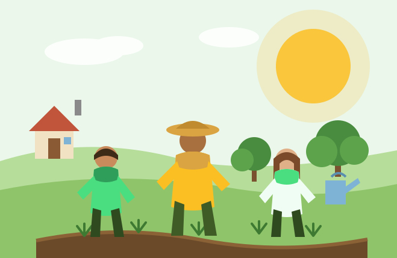

O que vou aprender?
Temos 3 módulos recheados de conteúdos do básico ao avançado para que você aprenda a cultivar alimentos de verdade, em qualquer espaço: quintal, sítio ou horta comunitária — sem depender de agrotóxicos nem de insumos caros.
- Módulo 01: solo vivo e compostagem
- Módulo 02: hortas, pomares e consórcio de culturas
- Módulo 03: água, clima e colheita consciente
CULTIVE O FUTURO COM A GENTE
Evolua e encare novos desafios no campo

Junte-se ao nosso ecossistema e transforme o seu pedaço de terra com a gente! Todos os dias dezenas de famílias acessam a nossa plataforma em busca de orientação para produzir alimento limpo, recuperar o solo e viver da terra. A nossa missão é te preparar para que você conecte-se com as melhores práticas do campo.